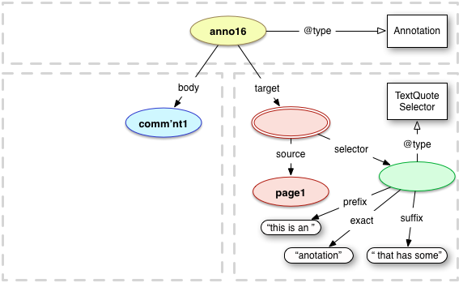
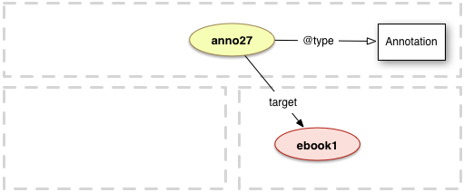
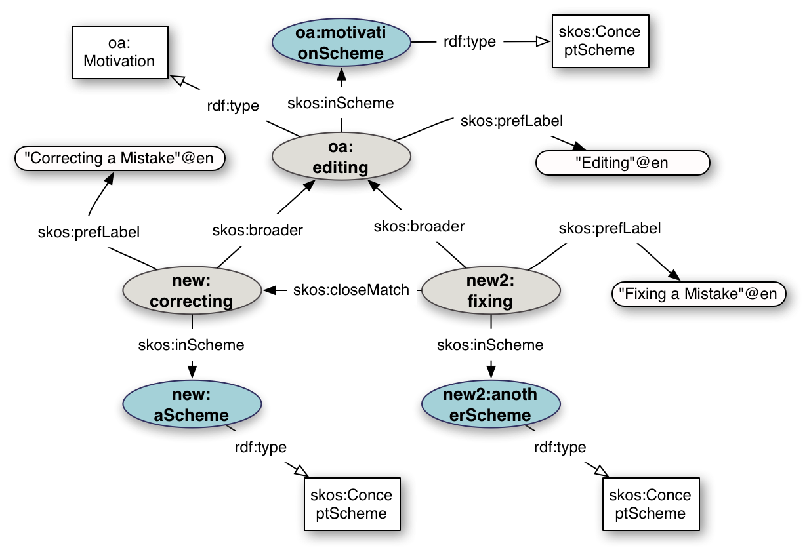

Annotations are typically used to convey information about a resource or associations between resources. Simple examples include a comment or tag on a single web page or image, or a blog post about a news article.
The Web Annotation Data Model specification describes a structured model and format to enable annotations to be shared and reused across different hardware and software platforms. Common use cases can be modeled in a manner that is simple and convenient, while at the same time enabling more complex requirements, including linking arbitrary content to a particular data point or to segments of timed multimedia resources.
The specification provides both a conceptual model that accommodates these use cases, and the vocabulary of terms that represents it. A specific JSON format is recommended for ease of creation and consumption of the annotations.
This is a work in progress. No section should be considered final, and the absence of any content does not imply that such content is out of scope, or may not appear in the future. If you feel something should be covered, please tell us!
This specification was derived from the Open Annotation Community Group's outcomes, and details of the differences between the two are maintained in the Acknowledgement appendix.
Introduction
Annotating, the act of creating associations between distinct pieces
of information, is a pervasive activity online in many guises.
Web citizens make comments about online resources using either tools built
in to the hosting web site, external web services, or the functionality
of an annotation client. Comments about shared photos or videos, reviews of products, or even social network mentions of web resources could all be considered as annotations. In addition, there are a plethora of "sticky note" systems and stand-alone multimedia annotation systems. This specification describes a common approach to expressing these annotations, and more.
The Web Annotation Data Model provides an extensible, interoperable framework for
expressing annotations such that they can easily be shared between
platforms, with sufficient richness of expression to satisfy complex
requirements while remaining simple enough to also allow for the most common use cases,
such as attaching a piece of text to a single web resource.
An annotation is considered to be a set of connected resources,
typically including a body and target, and conveys that the body is related to the target.
The exact nature of this relationship changes according to the intention of the annotation, but the body is most frequently somehow "about" the target. This perspective results in a basic model with three parts, depicted below.
The full model supports additional functionality, enabling content to be embedded within the annotation,
selecting arbitrary segments of resources, choosing the appropriate representation of a
resource and providing styling hints to help clients render the annotation appropriately.
Annotations created by or intended for machines are also possible, ensuring that the Data Web is not ignored in favor of only considering the human-oriented Document Web.
The Web Annotation Data Model does not prescribe a transport protocol for creating, managing and retrieving annotations. Instead it describes a resource oriented structure and serialization of that structure that could be carried over many different protocols. The related [[annotation-protocol]] specification describes a recommended transport layer, which may be adopted separately.
Aims of the Model
The primary aim of the Web Annotation Data Model is to provide a
standard description model and format to enable annotations to be shared between
systems. This interoperability may be either for sharing with others,
or the migration of private annotations between devices or platforms. The shared
annotations must be able to be integrated into existing collections
and reused without loss of significant information. The model should
cover as many annotation use cases as possible, while keeping the simple
annotations easy and expanding from that baseline to make complex uses possible.
The Web Annotation Data Model is a single, consistent model that can be used by all interested parties.
All efforts have been made to keep the implementation costs for both producers
and consumers to a minimum. A single method of fulfilling a use case
is strongly preferred over multiple methods, unless there are existing
standards that need to be accommodated or there is a significant cost
associated with a method that is otherwise necessary.
Diagrams and Examples
The examples throughout the document are serialized as [[JSON-LD]] using the Context given in Appendix B, and also as [[Turtle]] with the prefixes taken from the namespace declarations given in Appendix A.
The diagrams use the following style
Instances are depicted as colored ellipses.
Instances without a URI are depicted as colored ellipses with double lines.
Classes are depicted as white rectangles.
Literals are depicted as white lozenges.
Relationships and properties are depicted as straight, black lines.
Class instantiation is depicted as a straight black line with white arrow head.
Example instance identifiers are lowercase and end in a number. For example, anno1 is a specific instance of an Annotation, whereas Annotation is a class.
Example literals follow the requirements for the model and, thus, must not be interpreted as the only possible value.
Lists are depicted as vertical braces with a gray background and '...' in the middle (regardless of if there are actually other items in the list or not).
Conceptual resource boundaries not explicit in the model, but considered important for understanding, are depicted as grey dashed boxes around the components. They are used to convey spatial parts of the diagrams and may be safely ignored.
Terminology
The key words "MUST", "MUST NOT", "REQUIRED", "SHALL", "SHALL NOT", "SHOULD", "SHOULD NOT", "RECOMMENDED", "MAY", and "OPTIONAL" in this document are to be interpreted as described in [[rfc2119]].
Web Annotation Principles
The Web Annotation Data Model is defined using the following basic principles:
An Annotation is a rooted, directed graph that represents a relationship between resources.
There are two primary types of resource that participate in this relationship, Bodies and Targets.
Annotations have 0 or more Bodies.
Annotations have 1 or more Targets.
The content of the Body resources is related to, and typically "about", the content of the Target resources.
Annotations, Bodies and Targets may have their own properties and relationships, typically including creation and descriptive information.
The intent behind the creation of an Annotation or the inclusion of a particular Body or Target is an important property and represented by a Motivation resource.
The following principles describe additional distinctions regarding the exact nature of Target and Body:
The Target or Body resource may be more specific than the entity identified by the resource's URI alone.
In particular,
The Target or Body resource may be a specific segment of the resource.
The Target or Body resource may be styled in a specific way.
The Target or Body resource may be a specific state of the resource.
The Target or Body resource may be included in the Annotation to play a specific role.
The Target or Body resource may be any combination of the above.
The resource with these constraints is a separate resource from the Annotation, Body or Target, and is called a SpecificResource.
The SpecificResource refers to the source resource and the constraints that make it more specific.
The identity of the SpecificResource is separate from the descriptions of the constraints.
The following principles describe additional semantics regarding multiple resources:
A resource may be a choice between multiple resources.
A resource may be a unique, unordered set of resources.
A resource may be an ordered list of resources.
Web Annotation Framework
Annotations
An Annotation is a web resource. Typically, an Annotation has a single Body, which is a comment or other descriptive resource, and a single Target that the Body is somehow "about". The Annotation likely also has additional descriptive properties.
Example Use Case: Alice has written a post that makes a comment about a particular web page. Her client creates an Annotation with the post as the body resource, and the web page as the target resource.
Model
Term
Type
URI
Description
@context
Property
-
The context that determines the meaning of the JSON as an Annotation
The Annotation MUST have exactly 1 @context key and the value MUST be http://www.w3.org/ns/anno.jsonld
id
Property
-
The identity of the Annotation
An Annotation SHOULD have exactly 1 http/https URI that identifies it.
type
Relationship
rdf:type
The relationship between the Annotation and its class.
An Annotation MUST have at least the Annotation class, and MAY have other classes.
Annotation
Class
oa:Annotation
The class for Web Annotations
The Annotation class MUST be associated with an Annotation using type.
body
Relationship Property
oa:hasBody
The relationship between an Annotation and its Body
There SHOULD be 1 or more body relationships or properties associated with an Annotation but there MAY be 0.
When the body is a relationship (it is a URI) it MUST be given as the value of an id property of an object in the JSON-LD serialization.
target
Relationship
oa:hasTarget
The relationship between an Annotation and its Target
There MUST be 1 or more target relationships associated with an Annotation.
<http://example.org/anno1> a oa:Annotation ;
oa:hasBody <http://example.org/post1> ;
oa:hasTarget <http://example.com/page1> .
Basic Annotation Model (Diagram)
Creation Information
It is often important to have information about the context in which the Annotation was created. In particular, the person, organization or machine responsible for the Annotation deserves credit for their contribution, and the time at which the Annotation was created is useful for filtering out old, potentially irrelevant content. The creator of the Annotation is also useful for determining the trustworthiness of the Annotation. The software used to create and serialize the Annotation, along with when that activity occurred, is useful for both advertising and debugging issues.
Example Use Case: Beatrice writes a review of a restaurant online, and wishes to be associated with that review so that her friends know that it was her review and can trust it. Her client adds her account's identity, and its own identity, to the Annotation.
Model
Term
Type
URI
Description
creator
Relationship
dcterms:creator
The agent responsible for creating the Annotation. This may be either a human or software agent.
There SHOULD be exactly 1 creator relationship,
but MAY be 0 or more than 1, as the Annotation's creator may wish to remain anonymous, or multiple
agents may have worked together on it.
created
Property
dcterms:created
The time at which the Annotation was created.
There SHOULD be exactly 1 created property per Annotation, and MUST NOT be more than 1.
The datetime MUST be expressed in the xsd:dateTime format, and SHOULD have a timezone specified.
generator
Relationship
prov:wasGeneratedBy
The agent responsible for generating the Annotation to be transferred between client and server.
There MAY be 0 or more generator relationships.
generated
Property
prov:generatedAtTime
The time at which the agent referenced by generator generated the Annotation, and any subsequent substantially different one.
There MAY be exactly 1 generated property per Annotation, and MUST NOT be more than 1.
The datetime MUST be expressed in the xsd:dateTime format, and SHOULD have a timezone specified.
More information about the agents involved in the creation of an Annotation is normally required beyond a URI that identifies them. This includes whether they are an individual, a group or a piece of software and properties such as real name, account name, and email address.
Example Use Case: Corina wants to submit an Annotation to a system that does not manage her identity, and would like a pseudonym to be displayed. Her client adds this information to the Annotation to send to the service.
Model
Term
Type
URI
Description
id
Property
-
The identity of the agent
An Agent SHOULD have exactly 1 http/https URI that identifies it.
type
Relationship
rdf:type
The class of the Body
An Agent SHOULD have at least 1 class, from those below.
Person
Class
foaf:Person
The class for a human agent, typically used as the class of the creator of the Annotation
Organization
Class
foaf:Organization
The class for an organization, as opposed to an individual. This might be used as the class creator of the Annotation.
Software
Class
prov:SoftwareAgent
The class for a software agent, typically used as the class of the generator of the Annotation. It might also be used for the object of the creator for machine generated Annotations.
name
Property
foaf:name
The name of the agent.
Each agent SHOULD have exactly 1 name property.
account
Property
foaf:nick
The account name of the agent.
Each agent SHOULD have exactly 1 nick property.
email
Relationship
foaf:mbox
The email address associated with the agent, using the mailto: URI scheme.
Each agent MAY have 1 or more email addresses
homepage
Relationship
foaf:homepage
The home page for the agent. Each agent MAY have 1 or more home pages.
<http://example.org/anno3> a oa:Annotation ;
oa:hasBody <http://example.net/review1> ;
oa:hasTarget <http://example.com/restaurant1> ;
dcterms:creator <http://example.org/user1> ;
prov:generatedBy <http://example.org/client1> .
<http://example.org/user1> a foaf:Person ;
foaf:nick "pseudo" ;
foaf:name "My Pseudonym" .
<http://example.org/client1> a prov:SoftwareAgent ;
foaf:homepage <HomePage1> ;
foaf:name "Code v2.1" .
Creation Agents (Diagram)
Creation Reason
In many cases it is important to understand the reasons why the Annotation was created, not just the agents involved. These reasons are provided by declaring the motivation for the Annotations creation; the "why" rather than the "who" and "when" described in the previous sections.
Example Use Case:Dawn annotates a resource intending to provide a further description of it, perhaps for a screen reader to read aloud. Her client adds the right motivation to the Annotation to capture this.
Model
Term
Type
URI
Description
Motivation
Class
oa:Motivation
The Motivation for an Annotation is a reason for its creation, and might include things like Replying to another annotation, Commenting on a resource, or Linking to a related resource.
motivation
Relationship
oa:motivatedBy
The relationship between an Annotation and a Motivation.
There SHOULD be at least 1 Motivation for each Annotation, and MAY be more than 1.
Motivations
bookmarking
Instance
oa:bookmarking
The motivation for when the user intends to create a bookmark to the Target or part thereof. For example an Annotation that bookmarks the point in a text where the reader finished reading.
classifying
Instance
oa:classifying
The motivation for when the user intends to that classify the Target as something. For example to classify an image as a portrait.
commenting
Instance
oa:commenting
The motivation for when the user intends to comment about the Target. For example to provide a commentary about a particular PDF document.
describing
Instance
oa:describing
The motivation for when the user intends to describe the Target, as opposed to a comment about them. For example describing the above PDF's contents, rather than commenting on their accuracy.
editing
Instance
oa:editing
The motivation for when the user intends to request a change or edit to the Target resource. For example an Annotation that requests a typo to be corrected.
highlighting
Instance
oa:highlighting
The motivation for when the user intends to highlight the Target resource or segment of it. For example to draw attention to the selected text that the annotator disagrees with.
identifying
Instance
oa:identifying
The motivation for when the user intends to assign an identity to the Target. For example to associate the URI that identifies a city with a mention of the city in a web page.
linking
Instance
oa:linking
The motivation for when the user intends to link to a resource related to the Target.
moderating
Instance
oa:moderating
The motivation for when the user intends to assign some value or quality to the Target. For example annotating an Annotation to moderate it up in a trust network or threaded discussion.
questioning
Instance
oa:questioning
The motivation for when the user intends to ask a question about the Target. For example to ask for assistance with a particular section of text, or question its veracity.
replying
Instance
oa:replying
The motivation for when the user intends to reply to a previous statement, either an Annotation or another resource. For example providing the assistance requested in the above.
reviewing
Instance
oa:reviewing
The motivation for when the user intends to review the Target in some assessing fashion, rather than simply make a comment about it. For example to write a review of a Book.
tagging
Instance
oa:tagging
The motivation for when the user intends to associate a tag with the Target.
For more information about how Motivations can be inter-related and new Motivations created, please see this appendix.
The two main resources referenced from the Annotation are the Body and Target. While the Target is always an External Resource, the Body may be embedded within the Annotation graph. All of the features of External Resources may be used with Embedded Bodies.
External Resources
The Web is distributed, with different systems working together to provide access to content. Annotations can be used to link those resources together, being referenced as the Body and Target. Web Resources have identity via their URL, and have various properties, often including a format or language for the resource's content.
Example Use Case: Emily records a long analysis of a patent, and publishes it on her web site as an mp3. She then creates an Annotation with the PDF as the body, and the patent as the target.
Model
id
Property
-
The URI that identifies the Body or Target resource.
External Bodies or Targets MUST have exactly 1 id with the value of the resource's URI.
language
Property
dc:language
The language of the textual body's content
The Body or Target SHOULD have exactly 1 language associated with it, but MAY have 0 or more. The value of the property SHOULD be a language code following the [[rfc5646]] specifiction.
format
Property
dc:format
The format of the textual body's content
The Body or Target SHOULD have exactly 1 format associated with it, but MAY have 0. The value of the property SHOULD be the media-type of the format, following the [[rfc6838]] specification.
As the Target and Body may be created at a different time, and by a different agent, from the one that created the Annotation, creation information can be associated with the Body or Target resources body.
Example Use Case: Franceska writes a web page with a detailed walkthrough of a computer game. Gretchen later creates an Annotation with that page as the body, and the computer game as the target.
Model
Term
Type
URI
Description
creator
Relationship
dcterms:creator
The agent responsible for creating the Body or Target. This may be either a human or software agent.
There MAY be 1 or more creator relationships.
created
Property
dcterms:created
The time at which the Body or Target was created.
There MAY be exactly 1 created property, and MUST NOT be more than 1.
The datetime MUST be expressed in the xsd:dateTime format, and SHOULD have a timezone specified.
It is useful for clients to know the general class of an External Body or Target in advance. If the client cannot render videos, then knowing that the Body is a video will allow it to avoid needlessly downloading a potentially large resource. For resources that do not have obvious media types, such as many data formats, it is also useful for a client to know that a resource with the format text/csv should not simply be rendered as plain text, despite the first part of the media type, whereas application/pdf may be able to be rendered by the user agent despite the main type being 'application'.
Example Use Case: Hannah shoots a video of her comment about a site on her phone and uploads it. She associates the video with the site via an Annotation, and her client adds types as a hint to consuming systems.
Model
Term
Type
URI
Description
type
Relationship
rdf:type
The type of the Body resource.
The Body MAY have a type, and if so, it SHOULD be drawn from the list below.
Dataset
Class
dctypes:Dataset
The class for a resource which encodes data in a defined structure
Image
Class
dctypes:StillImage
The class for image resources, primarily intended to be seen
Video
Class
dctypes:MovingImage
The class for video resources, with or without audio
Sound
Class
dctypes:Sound
The class for a resource primarily intended to be heard
Text
Class
dctypes:Text
The class for a resource primarily intended to be read
<http://example.org/anno7> a oa:Annotation ;
oa:hasBody <http://example.org/video1> ;
oa:hasTarget <http://example.org/site1> .
<body1> a dctypes:MovingImage .
<target1> a dctypes:Text .
Typing of Body and Target (Diagram)
Segments of Exernal Resources
Many Annotations involve part of an external resource, rather than its entirety. In the Web [[webarch]], segments of resources are identified using URIs with a Fragment component that at the same time both describes how to extract the segment of interest from the resource, and identifies the extracted content. For simple Annotations, it is valuable to be able to use these Fragment URIs as the identifier of either Body or Target.
Example Use Case: Irina wants to describe a particular region of an image. She highlights that area in her client and types in the description. Her client then constructs the correct Fragment URI as the target.
Model
Term
Type
URI
Description
id
Property
-
The Fragment URI that identifies the segment of the Body or Target resource.
External Bodies or Targets MUST have exactly 1 id with the value of the resource's URI, and this MAY be a Fragment URI.
It is important to be aware of the consequences of using a Fragment URI, and the restrictions that using them places on implementations.
Fragments are defined with respect to individual media types. For example, HTML has a specific set of semantics regarding the meaning of the Fragment part of the URI.
Not every media type has a fragment specification. For example, Office documents might have a media-type and be published on the web, but not have semantics associated with the Fragment part of the URI.
Even if a media type does have a fragment definition, it is often not possible to describe the segment of interest sufficiently precisely. For example, fragments for HTML cannot be used to describe an arbitrary range of text.
It is not possible to determine with certainty what is being identified without knowing the media type, as the same fragment string might be possible in different specifications. For example, the same fragment string could identify either a rectangular area in an image, or a strangely named section of an HTML document.
Fragment URIs are not compatible with other methods of describing the segment more specifically. For example, it is not possible to describe how to retrieve the correct representation, add style information, or associate a role with the resource, using Fragment URIs. The method to accomplish these requirements is described in the Fragment Selector portion of the Specific Resources section.
As URIs are considered to be opaque strings, annotation systems may not discover annotations with fragment URIs
when searching by means of the URI without the fragment. For example, an Annotation with the Target
http://example.com/image.jpg#xywh=1,1,1,1 would not be discovered in a simple search for
http://example.com/image.jpg, even though it is part of it.
For more information regarding the use of Fragment URIs, please see the Best Practices for Fragment Identifiers and Media Type Definitions [[fragid-best-practices]].
<http://example.org/anno8> a oa:Annotation ;
oa:hasBody <http://example.org/description1> ;
oa:hasTarget <http://example.com/image1#xywh=100,100,300,300> .
Fragment URIs (Diagram)
Embedded Bodies
Textual Body
In many situations, the body of the Annotation will be in a text format, and created at the same time as the Annotation and not have a separate URI. In these cases, the Body's text can be included as part of the Annotation to avoid having to interact with multiple systems. The Body may also have the features of External Resources, including especially the language of the text and the format that it is conveyed in.
Example Use Case: Jane writes a comment about how much she likes an image on a photo sharing website. Her client creates an Annotation with the comment embedded within it, and adds that it is in French and formatted using HTML.
Model
The fundamental features of a textual body are:
Term
Type
URI
Description
id
Property
-
The identity of the textual body
The Body MAY have exactly 1 http/https URI that identifies it.
type
Relationship
rdf:type
The class of the Body
The Body MAY have the TextualBody class, and MAY have other classes.
TextualBody
Class
oa:TextualBody
A class assigned to the Body for embedding textual resources within the Annotation.
text
Property
oa:text
The character sequence of the content.
There MUST be exactly 1 text property associated with the TextualBody.
language
Property
dc:language
The language of the textual body's content
The textual body SHOULD have exactly 1 language associated with it, but MAY have 0 or more. The value of the property SHOULD be a language code following the [[rfc5646]] specifiction.
format
Property
dc:format
The format of the textual body's content
The textual body SHOULD have exactly 1 format associated with it, but MAY have 0. The value of the property SHOULD be the media-type of the format, following the [[rfc6838]] specification.
Systems SHOULD assume that Textual Bodies have the Text class.
In the same way that Annotations may have a Motivation for their creation, a Body may be included in the Annotation for a particular reason. This may be different from the Motivation for the creation of the Annotation.
Example Use Case: Kelly tags a web page that she wants to come back and read with "readme". The motiation for creating the annotation is bookmarking the page, and the role of the body is tagging that page with a particular string tag that she can later go back and search for.
Model
Term
Type
URI
Description
role
Relationship
oa:hasRole
The reason for including the Body in the Annotation.
There SHOULD be exactly 1 role for a Textual Body, and the value MUST be a Motivation
It is important to note that this feature cannot be used directly with External Resources in the same way as for TextualBody resources. See this section for how to structure roles with External Resources using a SpecificResource.
The simplest type of Body is a plain text string, without additional information or properties. This type of body is useful for the simplest of Annotations only, and is NOT RECOMMENDED for uses where the content of the body has any intellectual value or may need to be referred to from outside of the Annotation.
Example Use Case Megan wants to create a quick Annotation from a simple, command line client. She creates the JSON serialization in a text file and sends it to her Annotation server to maintain.
Model
There are several restrictions on when this form may be used and how it is to be interpreted.
The string body:
MUST be an xsd:string and the data type MUST NOT be expressed in the serialization.
MUST NOT have a language associated with it.
MUST be interpreted as if it were the value of the text property of a Textual Body.
MUST be interpreted as if the Textual Body resource had a format property with the value text/plain.
MUST be interpreted as if the Textual Body resource had a role property with the value of commenting.
MUST NOT have the value of other properties of the Textual Body inferred from similar properties on the Annotation resource.
In order for the body value to be a URI, it MUST be in the {"id": "URI"} form, otherwise it will be considered a string literal. However, as target MUST NOT be a string literal, it MAY be given as either a string or in the JSON object form.
An alternative that would allow clients to avoid type checking and make the model more coherent under consideration is to use a separate property, bodyText, to record the text of the body.
Term
Type
URI
Description
bodyText
Property
oa:bodyText
The string value of the body of the Annotation.
There MAY be exactly 1 bodyValue for an Annotation, and the value MUST conform to the requirements above.
While it is possible using only the constructions in the core data model described above to create Annotations that reference parts of resources by using Fragment URIs, there are many situations when this is not sufficient. For example, even a simple circular region of an image, or a diagonal line across it, are not possible. Selecting an arbitrary span of text in an HTML page, perhaps the simplest annotation concept, is also not supported by fragment URIs. Furthermore, there are non-segment use cases that require a client to retrieve a specific state or representation of the resource, to style it in a particular way, to associate a role with the resource that is specific to the Annotation's use of it, or for the Annotation to only apply when the resource is used in a particular context.
The Web Annotation Data Model uses a new type of resource to capture these Annotation-specific requirements: a SpecificResource. The SpecificResource is used in between the Annotation and the Body or Target, as appropriate, to capture the additional description of how it is used in the Annotation. The descriptions are referenced from the SpecificResource as separate entities and can be of various types to capture the different requirements. For example, if the Target of the Annotation is a circular region of an image, then the SpecificResource is the circular region, it is described by a Selector, and is also associated with the source Image resource.
The types of additional specificity that are available:
State: Describe the desired representation of the source resource for the Annotation
Selector: Describe the desired segment of the source resource for the Annotation
Style: Describe the style in which the source resource should be presented for the Annotation
Scope: Describe the scope in which the source resource applies for the Annotation
Role: Describe the role that the source resource plays for the Annotation
The same Specifier classes are used for both Specific Target and Specific Body.
The diagrams and examples in this section only depict one of these, however the same model applies for both.
Example Use Case: Noelle wants to make a comment about a circular region in an Image. She uses her client to draw the region and then writes her comment.
Model
Term
Type
URI
Description
id
Property
-
The identity of the Specific Resource
A Specific Resource MAY have exactly 1 http/https URI that identifies it, or MAY have no identity.
type
Relationship
rdf:type
The class of the Specific Resource
The Specific Resource MAY have the SpecificResource.
SpecificResource
Class
oa:SpecificResource
The class for Specific Resources
The SpecificResource class SHOULD be associated with a Specific Resource to be clear as to its role as a more specific region or state of another resource.
source
Relationship
oa:hasSource
The relationship between a Specific Resource and the resource that it is a more specific representation of.
There MUST be exactly 1 source relationship associated with a Specific Resource. The source resource MAY be described in detail as in the core data model or be just the resource's URI.
A future version of the specification may REQUIRE the use of SpecificResources for Body and Target in order to ensure consistency at the expense of additional structure.
<http://example.org/anno12> a oa:Annotation ;
oa:hasBody <http://example.org/comment1> ;
oa:hasTarget <http://example.org/region1> .
<http://example.org/region1> a oa:SpecificResource ;
oa:hasSource <http://example.org/image1> .
Specific Resources (Diagram)
Roles for External Resources
As well as Textual Bodies, roles can be associated with External Resources. This is done using the Specific Resource pattern, as the role specifies the way in which the resource is used in the context of the Annotation in the same way as a Selector describes the segment or a State describes the representation.
Example Use Case: Ophelia wants to tag a photo with an identifier for a city, rather than just type the city's name which could be ambiguous. Her client uses a well-known URI for the city having done a search for it, and creates a Specific Resource to manage the role.
Model
Term
Type
URI
Description
role
Relationship
oa:hasRole
The reason for including the External Resource in the Annotation.
There MAY be exactly 1 role associated with the SpecificResource, and the value MUST be a Motivation
<http://example.org/anno13> a oa:Annotation ;
oa:hasBody [
oa:hasRole oa:tagging ;
oa:hasSource <http://example.org/city1>
] ;
oa:hasTarget <http://example.org/photo1> .
<http://example.org/target1> a dctypes:Image .
Resource with Role (Diagram)
Selectors
Many Annotations refer to part of a resource, rather than all of it, as the Target. A Selector is used to describe how to determine the segment of interest from within the Source resource. The nature of the Selector will be dependent on the type of resource, as the methods to describe segments of different media-types will differ.
Example Use Case: Petra wants to associate a selection of text in a web page, with a slice of a dataset. She selects both using her client, and creates the Annotation with a SpecificResource that has a Selector for each of the Body and the Target.
Model
Term
Type
URI
Description
selector
Relationship
oa:hasSelector
The relationship between a Specific Resource and a Selector.
There MUST be exactly 0 or 1 selector relationships associated with a Specific Resource.
As the most well understood mechanism for selecting a segment of a resource is to use the fragment defined by the representation's media type, it is useful to allow this as a description for a Selector. This allows existing and future fragment specifications to be used with Specific Resources in a consistent way. To be clear about which fragment type is being used, the Selector may refer to the specification that defines it.
Example Use Case: Qitara wants to associate part of a video as the description of an image. She selects the time range within the video and clicks that it is describing the target. Her client then creates the Annotation using a SpecificResource with a FragmentSelector and the describing Motivation.
Model
It is RECOMMENDED to use FragmentSelector as a consistent method compatible with other means of describing SpecificResources, rather than using the Fragment URI directly. Consuming applications SHOULD be aware of both.
Term
Type
URI
Description
FragmentSelector
Class
oa:FragmentSelector
A resource which describes the segment of interest in a representation, through the use of the fragment identifier component of a URI.
value
Property
rdf:value
The contents of the fragment identifier component of a URI that describes the segment of interest in the resource.
The FragmentSelector MUST have exactly 1 value property.
conformsTo
Relationship
dcterms:conformsTo
The Fragment Selector SHOULD have a conformsTo link to the specification that defines the syntax of the fragment.
The following URIs are some of the specifications that define the semantics of fragments, and hence may be used with the conformsTo relationship. Other URIs MAY also be used.
This Selector describes a range of text by copying it, and including some of the text immediately before (a prefix) and after (a suffix) it to distinguish between multiple copies of the same sequence of characters.
For example, if the document were again "abcdefghijklmnopqrstuvwxyz", one could select "efg" by a prefix of "abcd", the match of "efg" and a suffix of "hijk".
Example Use Case: Ramona selects a typo (anotation) in a web page and adds a comment that it should be replaced with the correct spelling (annotation).
Model
Term
Type
URI
Description
TextQuoteSelector
Class
oa:TextQuoteSelector
The class for a Selector that describes a textual segment by means of quoting it, plus passages before or after it.
The TextQuoteSelector MUST have this class associated with it, and SHOULD NOT have other classes.
exact
Property
oa:exact
A copy of the text which is being selected, after normalization.
Each TextQuoteSelector MUST have exactly 1 exact property.
prefix
Property
oa:prefix
A snippet of text that occurs immediately before the text which is being selected.
Each TextQuoteSelector SHOULD have exactly 1 prefix property, and MUST NOT have more than 1.
suffix
Property
oa:suffix
The snippet of text that occurs immediately after the text which is being selected.
Each TextQuoteSelector SHOULD have exactly 1 suffix property, and MUST NOT have more than 1.
The text MUST be normalized before recording. Thus HTML/XML tags should be removed, character entities should be replaced with the character that they encode, unnecessary whitespace should be normalized, character encoding should be turned into UTF-8, and so forth. The normalization routine may be performed automatically by a browser, and other applications should implement the DOM String Comparisons method. This allows the Selector to be used with different encodings and user agents and still have the same semantics and utility.
If, after processing the prefix, exact and suffix, the user agent discovers multiple matching text sequences, then the selection SHOULD be treated as matching all of the matches.
If the content is under copyright or has other rights asserted on its use, then this method of selecting text is potentially dangerous. A user might select the entire text of the document to annotate, which would not be desirable to copy into the Annotation and share. For static texts with access and/or distribution restrictions, the use of the Text Position Selector is perhaps more appropriate.
{
"@context": "http://www.w3.org/ns/anno.jsonld",
"id": "http://example.org/anno16",
"type": "Annotation",
"body": {"id": "http://example.org/comment1"},
"target": {
"source": "http://example.org/page1",
"selector": {
"type": "TextQuoteSelector",
"exact": "anotation",
"prefix": "this is an ",
"suffix": " that has some"
}
}
}
<http://example.org/anno16> a oa:Annotation ;
oa:hasBody <http://example.org/comment1> ;
oa:hasTarget [
oa:hasSource <http://example.org/page1> ;
oa:hasSelector [
a oa:TextQuoteSelector ;
oa:exact "anotation" ;
oa:prefix "this is an " ;
oa:suffix " that has some"
]
] .
Text Quote Selector (Diagram)

Text Position Selector
This Selector describes a range of text by recording the start and end positions of the selection in the stream. Position 0 would be immediately before the first character, position 1 would be immediately before the second character, and so on. The start character is thus included in the list, but the end character is not.
For example, if the document was "abcdefghijklmnopqrstuvwxyz", the start was 4, and the end was 7, then the selection would be "efg".
Example Use Case: Sally writes a review of an ebook that does not allow its content to be extracted and copied. Her client describes the selection using its start and end position in the content.
Model
Term
Type
URI
Description
TextPositionSelector
Class
oa:TextPositionSelector
The class for a Selector which describes a range of text based on its start and end positions.
The TextPositionSelector MUST have this class associated with it, and SHOULD NOT have other classes.
start
Property
oa:start
The starting position of the segment of text. The first character in the full text is character position 0, and the character is included within the segment.
Each TextPositionSelector MUST have exactly 1 start property, and the value MUST be a non-negative integer.
end
Property
oa:end
The end position of the segment of text. The character is not included within the segment.
Each TextPositionSelector MUST have exactly 1 end property, and the value MUST be a non-negative integer.
The text MUST be normalized before counting the characters, in the same way as for Text Quotation Selector.
The use of this Selector does not require text to be copied from the Source document into the Annotation graph, unlike the Text Quote Selector, but is very brittle with regards to changes to the resource. Any edits may change the selection, and thus it is RECOMMENDED that a State be additionally used to help identify the correct representation.
Similar to the Text Position Selector, the Data Position Selector uses the same properties but works at the byte in bitstream level rather than the character in text level.
Example Use Case: Teynika writes comments about regions of online disk images for forensic purposes and describing emulation requirements. Her client generates the start and end positions from the binary stream, rather than the more human readable display she is using.
Model
Term
Type
URI
Description
DataPositionSelector
Class
oa:DataPositionSelector
The class for a Selector which describes a range of data based on its start and end positions within the byte stream.
The DataPositionSelector MUST have this class associated with it, and SHOULD NOT have other classes.
start
Property
oa:start
The starting position of the segment of data. The first byte is character position 0.
Each DataPositionSelector MUST have exactly 1 start property.
end
Property
oa:end
The end position of the segment of data. The last character is not included within the segment.
Each DataPositionSelector MUST have exactly 1 end property.
An SvgSelector defines an area through the use of the Scalable Vector Graphics [[SVG]] standard. This allows the user to select a non-rectangular area of the content, such as a circle or polygon by describing the region using SVG. The SVG may be either embedded within the Annotation or referenced as an External Resource.
Example Use Case: Ulrika is tagging an old map online with a diagonal region for a historical road. Her client creates SVG polygon to describe the region, relative to the image content.
Model
Term
Type
URI
Description
SvgSelector
Class
oa:SvgSelector
The class for a Selector which defines a shape for the selected area using the SVG standard.
The Selector MUST have this class associated with it and MAY also have the EmbeddedContent class associated with it.
EmbeddedContent
Class
oa:EmbeddedContent
The class for resources Embedded in the Annotation graph, other than Textual Bodies.
If the content of the SVG description is embedded within the Graph, then the Selector MUST have this class associated with it as well as the SvgSelector class.
text
Property
oa:text
The character sequence of the SVG content.
There MAY be exactly 1 text property associated with the Selector, and if so the value of the property MUST be well-formed SVG XML.
format
Property
dc:format
The format of the content.
The Selector MAY have exactly 1 format associated with it. If present, the value of the property MUST be the SVG media-type of image/svg+xml.
The dimensions of the SVG shape or canvas MUST be relative to the dimensions of the Source resource, such that scaling the shape's size to the full size of the image correctly describes the desired area.
It is NOT RECOMMENDED to include style information within the SVG element, nor Javascript, animation, text or other non-shape oriented information. Clients SHOULD ignore such information if present.
A State describes the intended state of a resource as applied to the particular Annotation, and thus provides
the information needed to retrieve the correct representation of that resource. Web resources change over time, and a State might be used to describe how to recover the intended previous version. Web resources also have multiple formats, and a State might equally be used to describe how to retrieve that particular format.
Example Use Case: Valeria makes a comment about a web page that changes frequently. Her client records information to allow other clients to hopefully reconstruct the original target of the annotation.
Model
Term
Type
URI
Description
state
Relationship
oa:hasState
The relationship between the SpecificResource and the State.
There MAY be 1 or more state relationships for each SpecificResource.
States MUST be processed before processing Selector or Style information.
A Time State resource records the time at which the resource is appropriate for the Annotation, typically the time that the Annotation was created and/or a link to a persistent copy of the current version.
Example Use Case: Wendy makes a note about the current state of the front page of a news website, and flags that the page is likely to change often. Her client adds in a State with the current time to describe the version of the page being annotated.
Model
Term
Type
URI
Description
TimeState
Class
oa:TimeState
A descriptoin of how to retrieve a representation
of the Source resource that is temporally appropriate for the Annotation.
The State MUST have this class associated with it.
sourceDate
Property
oa:sourceDate
The timestamp at which the Source resource should be interpreted for the Annotation, potentially to resolve via the Memento protocol [[rfc7089]].
There MAY be 0 or more sourceDate properties per TimeState, but there MUST be at least one of sourceDate and cachedSource. If there is more than 1, each gives an alternative timestamp at which the Source may be interpreted. The timestamp MUST be expressed in the xsd:dateTime format, and SHOULD have a timezone specified.
cached
Relationship
oa:cachedSource
A link to a copy of the Source resource's
representation, appropriate for the Annotation.
There MAY be 0 or more cached relationships per TimeState, but there MUST be at least one of cached and sourceDate. If there is more than 1, each gives an alternative copy of the representation.
As there are potentially many representations that can be delivered from a resource with a single URI, and a
Specific Resource may only apply to one of them, it is important to be able to record the HTTP Request headers
that need to be sent to retrieve the correct representation. The HttpRequestState resource maintains a copy
of the headers to be replayed when obtaining the representation.
Example Use Case: Xena retrieves a PDF representation of a web resource that can deliver HTML, PDF or plain text and then writes a description about it. She signals that her description is only about the PDF representation. Her client then includes a State to describe how to retrieve the target representation.
Model
Term
Type
URI
Description
HttpRequestState
Class
oa:HttpRequestState
A description of how to retrieve an appropriate representation of the Source resource for the Annotation, based on the HTTP Request headers to send on the request.
The State MUST have this class associated with it.
value
Property
rdf:value
The HTTP request headers to send as a single, complete string.
An HttpRequestState MUST have exactly 1 value property.
The interpretation of a particular Annotation may rely on rendering style being consistent across implementations. Rendering information is recorded using CSS stylesheets [[CSS2]] and references to classes defined in those stylesheets.
Example Use Case: Yadira highlights two sections of a document, one in red and the other in yellow. She then makes a comment that the yellow part contradicts the red part. Her client records the red and yellow coloration of the targets.
Model
Term
Type
URI
Description
CssStylesheet
Class
oa:CssStyle
A resource which describes styles for resources participating in
the Annotation using CSS.
stylesheet
Relationship
oa:styledBy
The relationship between an Annotation and the Style.
There MAY be 0 or 1 stylesheet relationships for each Annotation.
styleClass
Property
oa:styleClass
The name of the class used in the CSS description that should be applied to the Specific Resource.
There MAY be 0 or more styleClass properties on a Specific Resource.
The CSS Stylesheet is associated with the Annotation itself, and the content provides the rendering hints about the Annotation's constituent resources. It MAY have its own dereferenceable URI that provides the information, or it may be embedded within the Annotation. This is to avoid having single line stylesheets each associated with different resources, and instead to allow reference to a single URI that governs the full set of styles for a particular implementation.
Publishing systems MUST NOT assume that they will be processed; they are only provided as hints rather than requirements.
When rendering a Specific Resource, consuming applications SHOULD check to see if it has a styleClass property. If it does, then the application SHOULD attempt to locate the appropriate selector in the CSS document, and then apply the css-value block. If a Specific Resource has a styleClass value, but no such class is described by a stylesheet attached to the Annotation, then the styleClass MUST be ignored.
It is sometimes important for an Annotation to capture the context in which it was made, in terms of the resources that the annotator was viewing or using at the time. This does not imply an assertion that the annotation is only valid for the image in the context of that page, it just records that the page was being viewed.
Example Use Case: Zara makes a comment about an image in a particular web page to say that it is not the right organization's logo. Her client includes the page that the image is being rendered in, however the annotation is associated with the image resource itself.
Model
Term
Type
URI
Description
scope
Relationship
oa:hasScope
The relationship between a Specific Resource and the resource that provides the scope or context for it in this Annotation.
There MAY be 0 or more scope relationships for each Specific Resource.
Some Annotations may not have a Body at all. This is permitted by the model, and applications should expect to encounter such Annotations.
Example Use Case: Alexandra highlights a particular region of her ebook in green and, knowing what such a highlight means, she does not give a comment. Her client associates a Stylesheet with the Annotation, and does not artificially create a body.
Model
The body property is omitted when there is no body for the Annotation.
<http://example.org/anno27> a oa:Annotation ;
oa:hasTarget <http://example.org/ebook1> .
Annotations without a Body (Diagram)

Multiple Bodies or Targets
It is also possible for an Annotation to have multiple Bodies and/or Targets. Each Body is considered to be equally related to each Target individually, rather than to the set of Targets.
Example Use Case: Britney associates a tag and a description with two images using a single annotation.
Model
The body and/or target relationships of the Annotation may be arrays rather than a single object.
If the relationship between the bodies and targets of an Annotation are more complex than simply each of the bodies being about each of the targets, then additional constructions are required. These constructions, called Multiplicity Constructs, can express a Choice of alternatives, a Composite set of unordered objects, or an ordered List. The same constructions can also be used to express those same patterns between descriptions associated with Specific Resources, such as a List of Selectors, or a Choice of States.
The option of having a simple string literal for the body is not possible when using Multiplicity constructs, and the embedded textual body resource pattern MUST be used.
Choice
A Choice has an ordered list of resources from which an application should select only one to process or display. The order is given from the most preferable to least preferable, according to the Annotation's creator or publisher.
Example Use Case: Carla writes up her discussion of a particular site in both French and English. As the two posts are equivalent, there is no need to display both, and instead she wants French speakers to see the French comment, and everyone else to see the English version. Her client creates as Choice with the English comment listed first.
Model
Term
Type
URI
Description
Choice
Class
oa:Choice
A multiplicity construct that conveys to a consuming application that it should select one of the constituent resources to display to the user, and not render all of them.
members
Relationship
oa:memberList
A list of resources to choose from, with the default to use listed first.
Clients MAY use any algorithm to determine which resource to choose, and SHOULD make use of the information present to do so automatically, but MAY present a list and require the user to make the decision.
A Composite is a set of resources that are all required for an Annotation to be correctly interpreted.
Example Use Case: Devina writes a comparison of the differences between two online comics, both of which are required to understand the discussion.
Model
Term
Type
URI
Description
Composite
Class
oa:Composite
A multiplicity construct that conveys to a consuming application that all of the constituent resources are required for the Annotation to be correctly interpreted.
item
Relationship
oa:item
The relationship between a Composite and its constituent resources.
A Composite MUST have 1 or more items.
<http://example.org/anno30> a oa:Annotation ;
oa:hasBody <http://example.org/comparison1> ;
oa:hasTarget [
a oa:Composite ;
oa:item <http://example.org/comic1> ;
oa:item <http://example.org/comic2>
] .
Composite (Diagram)
List
A List is a construct that provides an order to its constituent resources in the context of the Annotation.
Example Use Case: Erin selects a paragraph in a web page, and then highlights a span of text within it to write her comment about. Her client conveys this by creating a List with two selectors, the first picks the paragraph, and the second the span of text, relative to the paragraph rather than the entire document.
Model
Term
Type
URI
Description
List
Class
oa:List
A multiplicity construct that conveys to a consuming application that all of the constituent resources are required for the Annotation to be correctly interpreted, and in a particular order.
The Web Annotation Data Model defines a namespace for its classes and properties, and uses several others as listed below. The namespace URI will always remain the same, even if the data model changes.
The following namespaces are used in this specification:
Prefix
Namespace
Description
oa
http://www.w3.org/ns/oa#
The Web Annotation Data Model
dc
http://purl.org/dc/elements/1.1/
[[DC11]]
dcterms
http://purl.org/dc/terms/
[[DC-TERMS]]
dctypes
http://purl.org/dc/dcmitype/
[[DC-TERMS]]
foaf
http://xmlns.com/foaf/0.1/
[[FOAF]]
prov
http://www.w3.org/ns/prov#
[[prov-o]]
rdf
http://www.w3.org/1999/02/22-rdf-syntax-ns#
[[rdf-schema]]
rdfs
http://www.w3.org/2000/01/rdf-schema#
[[rdf-schema]]
skos
http://www.w3.org/2004/02/skos/core#
[[skos-reference]]
xsd
http://www.w3.org/2001/XMLSchema#
[[xmlschema-2]]
JSON-LD Considerations
The RECOMMENDED serialization format is [[JSON-LD]]. The JSON-LD context presented below is RECOMMENDED to ensure consistency between implementations, and SHOULD be referenced as http://www.w3.org/ns/anno.jsonld. It has a profile URI that SHOULD be used: http://www.w3.org/TR/annotation-model/jsonLdProfile. Beyond the annotation model, it also contains terms needed for the [[annotation-protocol]], adoption of which is RECOMMENDED.
Entirely Contrived Example Use Case: Felicity wants to associate a comment that she wrote in English within the annotation or a external mp3 of the same content in German by someone else, plus a tag, with a range of characters from a particular element in an XML representation of a document as it was at a certain point in time, and for it to be displayed in a particular way.
<http://example.org/anno32> a oa:Annotation ;
oa:motivatedBy oa:commenting ;
dcterms:creator <http://example.org/user1> ;
dcterms:created "2015-10-13T13:00:00Z" ;
prov:generatedBy <http://example.org/client1> ;
prov:generatedAtTime "2015-10-14T15:13:28Z" ;
oa:hasStyle <http://example.org/stylesheet1> ;
oa:hasBody [
a oa:TextualBody ;
oa:hasRole oa:tagging ;
oa:text "love"
] ;
oa:hasBody [
a oa:Choice ;
oa:members (
[
a oa:TextualBody ;
oa:hasRole oa:describing ;
oa:text "I really love this particular bit of text in this XML. No really." ;
dc:format "text/plain" ;
dc:language "en" ;
dcterms:creator <http://example.org/user1>
]
[
a oa:SpecificResource ;
oa:hasRole oa:describing ;
oa:hasSource <http://example.org/comment1>
]
)
] ;
oa:hasTarget [
a oa:SpecificResource ;
oa:styleClass "mystyle" ;
oa:hasSource <http://example.com/document1> ;
oa:hasState [
a oa:HttpRequestState ;
rdfs:value "Accept: application/xml"
] ;
oa:hasState [
a oa:TimeState ;
oa:sourceDate "2015-09-25T12:00:00Z"
] ;
oa:hasSelector [
a oa:List ;
oa:members (
[
a oa:FragmentSelector ;
rdfs:value "xpointer(/doc/body/section[2]/para[1])"
]
[
a oa:TextPositionSelector ;
oa:start 6 ;
oa:end 27
]
)
]
] .
<http://example.org/comment1> a dctypes:Audio ;
dc:format "audio/mpeg" ;
dc:language "de" ;
dcterms:creator <http://example.org/user2> .
<http://example.org/user1> a foaf:Person ;
foaf:name "A. Person" ;
foaf:nick "user1" .
<http://example.org/user2> a foaf:Person .
<http://example.org/client1> a prov:SoftwareAgent ;
foaf:homepage <http://example.org/homepage1> ;
foaf:name "Code v2.1" .
<http://example.org/stylesheet1> a oa:CssStyle .
Complete Example (Diagram)
The diagram is too complex to be useful.
Extending Motivations
Although the list of Motivations in the specification is derived from an extensive survey of the annotation landscape, there are many situations where more precise definitions are required or desirable. In these cases it is RECOMMENDED to create a new Motivation resource and relate it to one or more that already exist.
New Motivations MUST be instances of oa:Motivation, which is a subClass of skos:Concept.
The skos:broader relationship SHOULD be asserted between the new Motivation and at least one existing Motivation, if there are any that are broader in scope. Other relationships, such as skos:relatedMatch, skos:exactMatch and skos:closeMatch, SHOULD also be asserted to concepts created by other communities.
Model

Extending Motivations
Acknowledgements
The Web Annotation Working Group gratefully acknowledges the contributions of the Open Annotation Community Group. The output of the Community Group was fundamental to the current data model.
Changes in this specification from the Community Group's model are:
Allow a string literal as the body
Replace the ContentAsText construction which was not taken through the standardization process
Allow association of Motivation as roles on a per body or target basis
Align Tags and SemanticTags with roles for body and target
Replace provenance mappings with more common and more correct dcterms functionality
Explicitly recommend dcterms for body and target
Use intuitive and memorable names for the JSON-LD keys
Simplify and regularize the specification
Improve the Choice and List constructions by not multi-classing rdf:List, and instead referencing one
Remove equivalence as a much broader problem than just annotation
Deprecate embedded graphs as an explicit part of the model, instead just include or reference a serialized graph